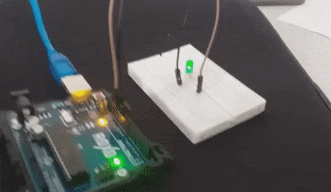

Sobre o projetinhozin

A interação entre a eletrônica e a estética visual sempre despertou fascínio e criatividade. Um exemplo é o circuito com LED de efeito "fade in" e "fade out". Esse projeto combina a simplicidade dos diodos emissores de luz (LEDs) com a elegância de transições suaves de brilho, criando um efeito luminoso que atrai olhares e desperta a imaginação. Ao explorar as funcionalidades desse circuito, entenderemos suas aplicações artísticas e práticas, demonstrando como a tecnologia pode ser integrada a obras visuais ou audiovisuais.
Funcionalidades do Circuito LED Fade In e Fade Out:
O circuito LED "fade in" e "fade out" é projetado para controlar o brilho de um ou mais LEDs de maneira gradual e suave. Ele utiliza componentes eletrônicos simples, como resistores e ledzinhos para controlar a corrente elétrica que flui através dos LEDs. O resultado é um efeito visual encantador no qual os LEDs aumentam gradualmente de intensidade luminosa (fade in) e depois diminuem de maneira suave (fade out). Essa capacidade de criar transições de luz suaves torna o circuito adequado para aplicações que vão desde iluminação de ambientes até cenários artísticos e espetáculos.
Exemplos de Aplicações Criativas Com Esse Efeito:
- Decoração Residencial: O circuito pode ser usado para criar iluminação ambiente suave em cômodos, corredores ou espaços de convivência.
- Iluminação Cênica: Em eventos ou apresentações artísticas, o efeito fade in e fade out adiciona drama e ênfase visual.
- Instalações Artísticas: Artistas visuais podem incorporar o efeito luminoso em suas obras para criar impacto emocional e estético.
- Para Educar (Huh! Não é mesmo?): O projeto pode ser usado como uma introdução prática à eletrônica para estudantes, demonstrando conceitos de controle de brilho e transições.
Participantes do Projeto:
Este empolgante projeto de circuito LED "fade in" e "fade out" terá 5 desenvolvedores. São eles:
- Ed. Oliveira 18
- Arthur Zuliani 10
- Giorgio Riboldi 22
- Ed. Antonio 17
- Carlos Eduardo 39
Abaixo está a montagem de um circuito fade in e out.